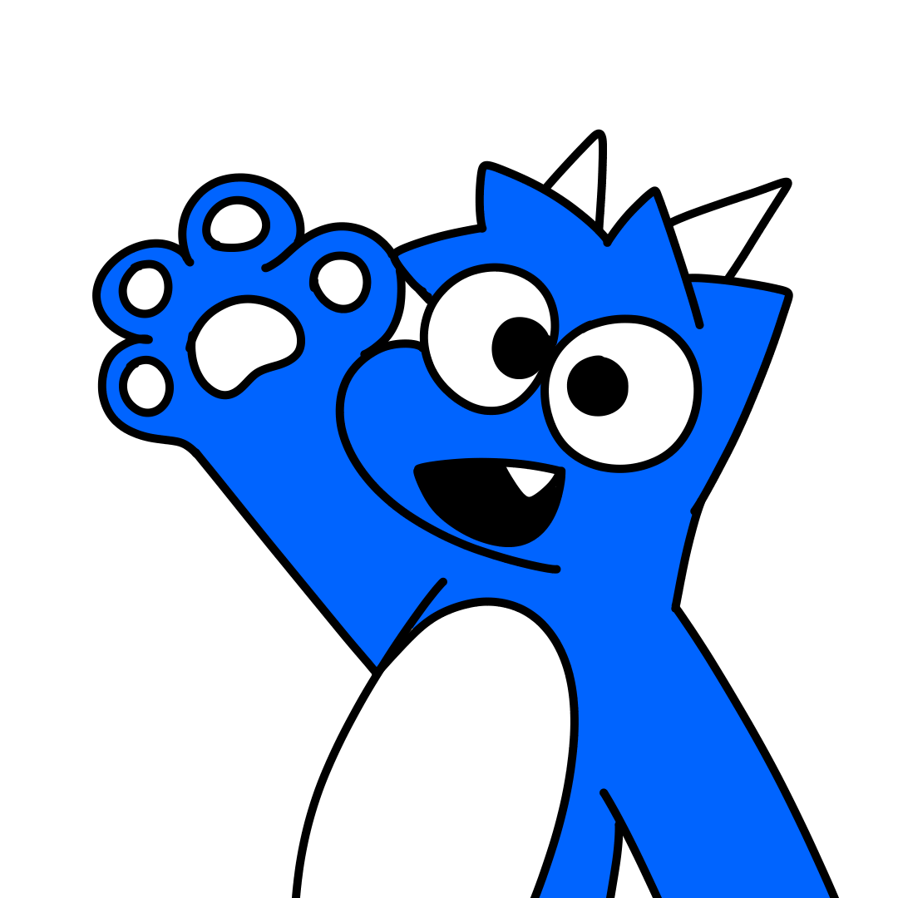
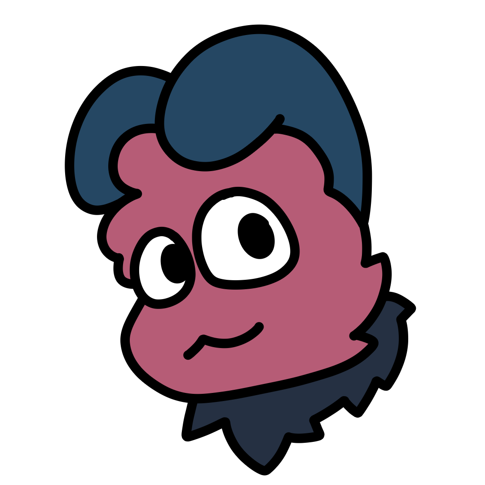

Dell the Dragon (fursona)
Not to be confused with Dell INC which makes computers. Dell is the name of an anthro dragon. A fluffy dragon covered in fur. He is blue with a white underbelly, his tail has a white tip, and under the tip is a white ring.
